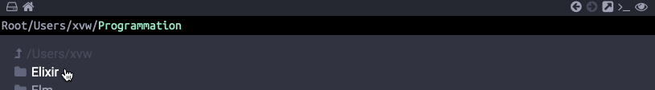

Voyager dans le temps avec un Zipper
Au contraire des deux précédents articles, je vais tâcher d’être très bref en présentant un usage concret d’une structure de données pour représenter un historique naviguable. L’intérêt de l’usage d’un Zipper réside dans la simplicité étonnante avec laquelle il est implémentable. Le code présenté dans cet article sera, une fois de plus, en Elm.
Cet article sera un peu différent des précédents car il présente une expérience concrète et un raisonnement sur quelle structure de données utiliser pour solutionner une problématique spécifique.
Ces derniers jours, j’ai démarré le développement de Qian, un tout petit explorateur de fichier pour remplacer Finder (de OSX), que je n’aime pas vraiment pour d’obscures raisons. Bien que mon objectif est de m’en tenir à mes besoins les plus stricts, pour permettre au logiciel de sortir rapidement (comme un prototype) et de suivre une évolution portée par mes attentes, j’ai très rapidement considéré la présence d’un historique de navigation. Concrètement, la présence des boutons suivant et précédent.
Voici un exemple de l’utilisation de ces derniers dans Qian :
Un exemple de navigation
Mon application n’étant pas dans un vrai navigateur web mais dans une fenêtre Electron, je ne bénéficie pas des boutons suivant/précédent fourni par le navigateur. D’où l’implémentation manuelle de l’historique.
Rapellons d’abord ce que nous attendons de notre historique. En définissant bien le périmètre de notre fonctionnalité, nous verrons que le spectre de notre structure de donnée sera réellement emmergera (une autre approche aurait pu être de rédiger une batterie de tests, cependant, je pense que pour la lisibiltié de l’article, une explication textuelle sera plus adaptée).
Représentation visuelle de l’historique
Pour la clareté de l’explication, nous allons imaginer que nous implémentons un historique sur une application web composée de ces différentes pages :
index.htmlaPropos.htmlcontact.htmlliens.html
Initialement, quand on démarre une session, l’utilisateur ou l’utilisatrice ne possède qu’un état courant. En effet, comme il ou elle vient de démarrer l’application, il est impossible qu’il y ait une page précédente et une page suivante et l’état courant est la page index.html :
Un exemple de navigation
Imaginons maintenant que la personne utilisant l’application se rende à la page liens.html en passant par la page aPropos.html, nous pouvons techniquement revenir deux fois en arrière :
Un exemple de navigation avec des prédécesseurs
Concrètement, le fait de se rendre sur une autre page consiste simplement à empiler dans la pile de l’historique la page que l’on quitte. À ce stade, nous avons déjà les ingrédients pour implémenter la stratégie d’enregistrement des pages précédentes.
Imaginons maintenant que l’utilisateur ou l’utilisatrice veuille se rendre sur la page aPropos.html en utilisant le bouton précédent :
Un exemple de navigation avec des successeurs
En retournant, une fois de plus, en utilisant le bouton précédent, sur la page index.html, notre passé est maintenant vide, et notre futur potentiel possède deux éléments :
Un exemple de navigation avec des successeurs
Nous sommes donc maintenant sur la page index.html, retour aux sources. Revenons à l’état précédent, en utilisant le bouton suivant (paradoxal, n’est-ce pas) :
Un exemple de navigation avec des successeurs
Et décidons de nous rendre à la page contact.html. Dès lors que l’on ne se sert plus des boutons précédent et suivant pour naviguer, notre futur potentiel est nettoyé :
Suppression du futur potentiel
Pour être honnête (et faire aveu de ma naïveté), au début, j’avais considéré, simplement, que la visite d’une nouvelle page entrainait l’empilement de la page que l’on quitte dans le passé, sans vider le futur. Cette approche peut ne pas être pénalisante si on implémente un historique de navigation, cependant, elle introduit un état incohérent. Pour bien comprendre l’incohérence de l’état du futur potentiel, je vous invite à imaginer l’historique d’un logiciel de peinture numérique. Ici, nous pourrions imaginer, en plus de notre palette d’outils pour le dessins, ces deux commandes :
ctrl + z: “undo”, qui retourne dans le “passé” ;ctrl + u: “redo”, qui retourne dans le “futur”.
Imaginez ce qu’il se passerait si j’intercale une action entre mon passé et mon futur :
Dans un logiciel de dessin (libre !)
On se rend vite compte qu’on crée un état incohérent. Même si dans l’historique de navigation d’un explorateur de fichier, ce n’est pas dramatique, dans un éditeur d’image, ça pourrait créer des résultats amusants.
Implémentation de l’historique
Il existe plusieurs manières de procéder. En effet, une liste chainée pourrait parfaitement convenir. Cependant, comme Elm est un langage fonctionnel, je vous propose d’utiliser une variation d’une structure fonctionnelle connue. Le Zipper a été proposé par Gerard Huet en 1993. Il s’agit d’une interface sur une structure pour naviguer à gauche et à droite. Bien qu’il existe plusieurs implémentation, nous allons partir d’une variation légère du Zipper (qui d’habitude, agit sur un arbre) utilisant deux listes et un élément courant :
type alias History a =
{ past : List a
, present : a
, future : List a
}
Nous pouvons maintenant définir une interface pour utiliser notre historique. La première étape étant, simplement, de permettre de construire un nouvel historique. Comme je suppose qu’il est impossible de ne pas avoir d’état initial, l’implémentation de cette fonction est très aisée :
new : a -> History a
new currentState =
{ past = []
, present = currentState
, future = []
}
Maintenant que nous pouvons créer un nouvel historique, nous pouvons nous intéresser à la navigation.
Implémentation la navigation
Pour aller à gauche ou à droite, nous allons partir du principe que c’est une opération qui peut échouer. En effet, comment remonter dans le temps s’il n’existe pas de passé , et inversément, comment avancer dans le temps s’il n’existe pas de futur ? Comme l’opération peut échouer, on se servira de ces signatures :
backward : History a -> Maybe (History a)
forward : History a -> Maybe (History a)
Le seul cas où le voyage dans le temps peut échouer étant l’absence de passé ou de futur, il n’est pas nécéssaire de qualifier l’erreur (en utilisant Result, par exemple).
L’implémentation des deux commandes est assez simple (et récurrente) :
backward : History a -> Maybe (History a)
backward zipper =
case zipper.past of
[] ->
Nothing
x :: xs ->
Just { past = xs
, present = x
, future = zipper.present :: zipper.future
}
Si notre Zipper ne possède pas de passé, on renvoie Nothing, par contre, si c’est le cas, notre présent est empilé dans le future, et la tête du passé devient le présent.
forward : History a -> Maybe (History a)
forward zipper =
case zipper.future of
[] ->
Nothing
x :: xs ->
Just { past = zipper.present :: zipper.past
, present = x
, future = xs
}
La tâche est identique pour avancer dans le temps, sauf qu’on agit sur le future et non sur le passé. Nous pouvons maintenant très facilement naviguer dans notre Zipper. De plus, nous pouvons aussi nous servir de nos deux fonctions pour implémenter des combinateurs complémentaires :
hasPast : History a -> Bool
hasPast zipper =
case backward zipper of
Nothing ->
False
Just _ ->
True
hasFuture : History a -> Bool
hasFuture zipper =
case forward zipper of
Nothing ->
False
Just _ ->
True
Maintenant que nous avons la navigation dans l’historique, il ne nous reste plus qu’a intégrer une fonction pour visiter l’historique.
Pousser un nouvel état dans l’historique
Comme nous l’avions évoqué dans l’introduction de l’article, l’ajout d’un nouvel élément dans l’historique nettoie le futur du Zipper, pour garantir que l’on puisse invariablement restituer un état cohérent. Son implémentation est très facile :
push : History a -> a -> History a
push zipper newState =
{ past = zipper.present :: zipper.past
, present = newState
, future = []
}
Et c’est tout…
Intérêt d’un Zipper
Dans un langage fonctionnel, l’ajout en tête (une opération que l’on appelle Cons) est très peu coûteuse : O(1) et la déconstruction de la tête et de la queue d’une liste est elle aussi de complexité O(1). De ce fait, l’implémentation de notre historique ne repose que sur des opérations peu coûteuse, ce qui le rend très efficace. De plus, le Zipper permet de ne jamais faire de mutations, on renvoie sans arrêt un nouveau Zipper et le glâneur de cellules s’occupe d’allouer/désallouer ce qui est nécéssaire. En plus d’être, dans ce contexte, très efficace, je trouve que le Zipper est une structure élégante et facile à utiliser.
Conclusion
Dans cet article (très court), nous avons vu l’utilisation d’une structure de données issue du monde de la programmation fonctionnelle. Sans vouloir faire de comparaisons capilotractées, connaître ces structures est, en analogie avec la programmation Orienté Objets, aussi important que la connaissance des motifs de conceptions.
Je suis parfaitement conscient que sur beaucoup d’aspects, cet article est naïf, cependant, il est possible qu’il soit le premier d’une série, un peu plus technique, sur des usages concrets de structures de données fonctionnelles.